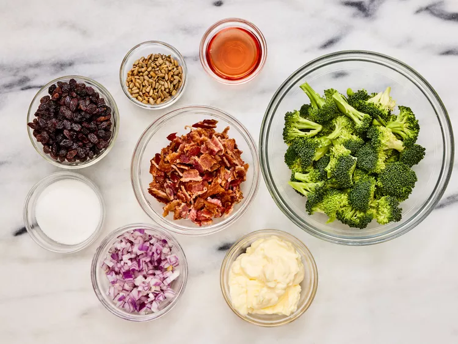
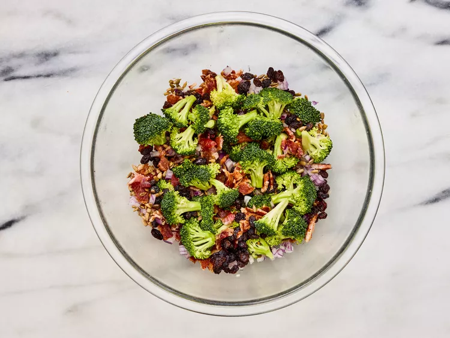

This broccoli bacon salad with crunchy red onions and juicy raisins tossed in a creamy dressing is simple and
delicious. Anybody who doesn't like broccoli will change their mind upon taking their first bite!
Ingredients
12 slices cooked bacon, crumbled
1 large head broccoli, cut into florets
1 cup raisins
1 small red onion, chopped
¼ cup sunflower seeds
Steps
Gather all ingredients.

Combine bacon, broccoli, raisins, onion, and sunflower seeds in a large bowl.

To make the dressing: Whisk mayonnaise, sugar, and red wine vinegar together in a small bowl until dressing is smooth.